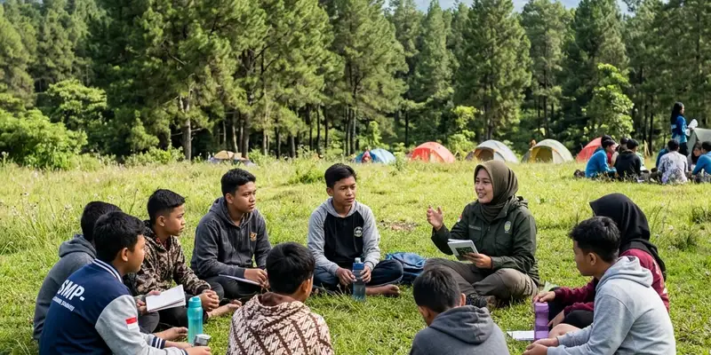

Outbound sekolah di Malang Raya mencakup wilayah Kota Malang, Kabupaten Malang, dan Kota Batu, dengan pilihan lokasi yang bervariasi mulai dari area pegunungan hingga bumi perkemahan dataran rendah.
Ringkasan Inti
- Malang Raya terdiri dari tiga wilayah administratif yang masing-masing memiliki karakter lokasi berbeda
- Kondisi geografis dataran tinggi mendukung banyak pilihan lokasi outdoor untuk outbound
- Faktor cuaca dan aksesibilitas perlu dipertimbangkan sekolah sebelum menetapkan lokasi
- Biaya dapat berbeda tergantung jarak lokasi dari sekolah
- Vendor lokal seperti Gemilang Katun Outbound umumnya memahami karakteristik wilayah secara lebih detail
Wilayah Mana Saja yang Termasuk Cakupan Outbound Sekolah Malang Raya?
Cakupan outbound sekolah Malang Raya meliputi Kota Malang, Kabupaten Malang, dan Kota Batu, yang masing-masing menawarkan karakter lokasi berbeda untuk kegiatan LDKS maupun MPLS.
Kota Malang umumnya menyediakan lokasi outbound yang lebih dekat dengan pusat kota dengan akses transportasi mudah, cocok untuk sekolah yang menginginkan kegiatan sehari tanpa menginap. Kabupaten Malang, yang wilayahnya lebih luas dan mencakup area pegunungan, menawarkan lokasi dengan suasana alam terbuka yang lebih kuat, sering dipilih untuk kegiatan LDKS yang membutuhkan suasana kemah. Kota Batu, yang dikenal sebagai kawasan wisata dataran tinggi, juga menjadi pilihan populer karena udara sejuk dan banyaknya fasilitas pendukung wisata edukasi.

Fasilitas alam terbuka di Malang Raya mendukung pelaksanaan kegiatan pendidikan karakter yang terpadu dengan alam.
Apa Faktor Lokasi yang Perlu Diperhatikan Sekolah?
Faktor lokasi yang perlu diperhatikan sekolah meliputi jarak tempuh dari sekolah, kondisi cuaca setempat, serta ketersediaan fasilitas dasar seperti toilet, tempat berteduh, dan akses kendaraan darurat.
Sekolah sebaiknya mempertimbangkan waktu tempuh menuju lokasi agar tidak mengurangi waktu efektif kegiatan, terutama jika program dilaksanakan dalam satu hari. Selain itu, kondisi cuaca di wilayah dataran tinggi seperti Kabupaten Malang dan Kota Batu cenderung lebih cepat berubah, sehingga penting menyiapkan rencana cadangan apabila terjadi hujan atau kabut tebal saat kegiatan berlangsung.
Ketersediaan fasilitas dasar di lokasi juga perlu dipastikan sejak awal, termasuk akses jalan yang memadai apabila sewaktu-waktu diperlukan evakuasi darurat selama kegiatan outbound berlangsung.
Bagaimana Kondisi Geografis Malang Raya Mendukung Kegiatan Outbound?
Kondisi geografis Malang Raya yang berupa dataran tinggi dan dikelilingi pegunungan mendukung beragam pilihan lokasi outdoor, mulai dari area hutan pinus, bumi perkemahan, hingga kawasan agrowisata yang sering digunakan untuk kegiatan outbound sekolah.
Karakteristik wilayah ini membuat Malang Raya secara umum dikenal sebagai salah satu destinasi kegiatan luar ruang di Jawa Timur, termasuk untuk kebutuhan pendidikan seperti LDKS dan MPLS. Suhu udara yang relatif sejuk dibanding daerah pesisir juga membuat aktivitas fisik dalam outbound terasa lebih nyaman bagi peserta, terutama pada kegiatan yang berlangsung lebih dari setengah hari.
Vendor lokal yang memahami karakteristik wilayah, seperti Gemilang Katun Outbound, umumnya memiliki keunggulan dalam merekomendasikan lokasi yang sesuai dengan kebutuhan dan anggaran sekolah, karena telah terbiasa menyesuaikan program dengan kondisi geografis setempat.
Kesimpulan
Sekolah di Malang Raya memiliki banyak pilihan lokasi untuk kegiatan outbound LDKS dan MPLS, mulai dari Kota Malang, Kabupaten Malang, hingga Kota Batu. Pemilihan lokasi sebaiknya mempertimbangkan jarak, cuaca, dan fasilitas pendukung, dengan bantuan vendor lokal berpengalaman seperti Gemilang Katun Outbound untuk memastikan kegiatan berjalan lancar dan sesuai kebutuhan sekolah.
FAQ
Sebagian besar wilayah Malang Raya mendukung kegiatan outbound, namun kesesuaian tetap perlu disesuaikan dengan kebutuhan dan anggaran masing-masing sekolah.
Biaya dapat bervariasi tergantung jarak dan fasilitas lokasi, sehingga sekolah disarankan membandingkan penawaran sebelum menetapkan pilihan.
Sekolah sebaiknya menyiapkan rencana cadangan indoor dan berkoordinasi dengan vendor mengenai kesiapan menghadapi perubahan cuaca mendadak.